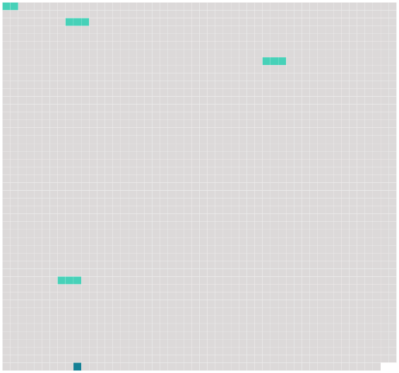

Longueur nb maillons : 5 mentions |
|
[Article 33] [2 phrases]
En ce qui concerne le dommage résultant de la mort ou d'une lésion corporelle subie par un passager, l'action en responsabilité peut être intentée devant l'un des tribunaux mentionnés au paragraphe 1 [du présent article] ou, eu égard aux spécificités du transport aérien, sur le territoire d'un État partie où le passager a sa résidence principale et permanente au moment de l'accident et vers lequel ou à partir duquel le transporteur exploite des services de transport aérien, soit avec ses propres aéronefs, soit avec les aéronefs d'un autre transporteur en vertu d'un accord commercial, et dans lequel ce transporteur mène ses activités de transport aérien à partir de locaux que lui-même ou un autre transporteur avec lequel il a conclu un accord commercial loue ou possède. [9 phrases]
La procédure d'arbitrage se déroulera, au choix du demandeur, dans l'un des lieux de compétence des tribunaux prévus à [l'article 33] [35 phrases]
Article 46 [13 phrases] Sauf au paragraphe 2 de l'article 1, au paragraphe 1, alinéa b ), de l'article 3, à l'alinéa b ) de l'article 5, aux articles 23, [33] , 46 et à l'alinéa b ) de l'article 57, toute mention faite d'un " État partie " ou " d'États parties " s'applique également aux organisations régionales d'intégration économique. |
 |
Il est possible de télécharger la ressource sur la page Ortolang |
Si vous avez des questions ou vous voyez des erreurs, merci d'envoyer un mail à silvia.federzoni89@gmail.com |